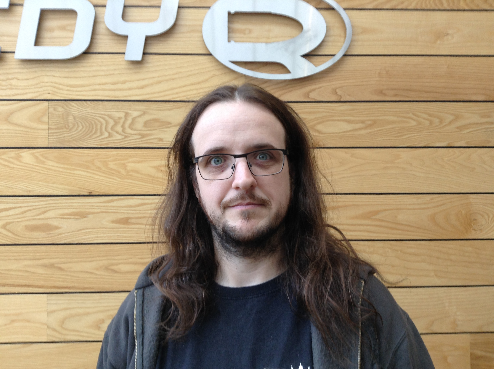
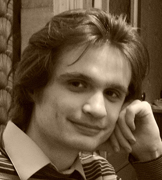

Walter Bright
 |
Walter Bright is the creator and first implementer of the D programming language and has implemented compilers for several other languages. He's an expert in all areas of compiler technology, including front ends, optimizers, code generation, interpreter engines and runtime libraries. Walter regularly writes articles about compilers and programming, is known for engaging and informative presentations, and provides training in compiler development techniques. Many are surprised to discover that Walter is also the creator of the wargame Empire, which is still popular today over 30 years after its debut. |
Andrei Alexandrescu
 |
Andrei Alexandrescu coined the colloquial term "modern C++" (adapted from his award-winning book Modern C++ Design), used today to describe a collection of important C++ styles and idioms. He is also the coauthor (with Herb Sutter) of C++ Coding Standards and the author of The D Programming Language book. With Walter Bright, Andrei co-designed many important features of D and authored a large part of D's standard library. His research on Machine Learning and Natural Language Processing completes a broad spectrum of expertise. Andrei holds a Ph.D. in Computer Science from the University of Washington and a B.Sc. in Electrical Engineering from University "Politehnica" Bucharest. He works with the D Language Foundation. |
Leandro Lucarella
| Leandro Lucarella has been following D since about 2004 and started participating in D forums in late 2006. In 2008 he started working on the CDGC as his Software Engineering thesis, which he finished by the end of 2010. Since he got involved with D he has been an on-and-off small contributor. With more than 15 years of experience in the industry, in the last years he's been focusing on low-latency and distributed systems in C/C++ and moved to Berlin in late 2011 to work in D at Sociomantic. |
Ali Çehreli
| Ali Çehreli has been working with C, C++, and D in Silicon Valley since 1996. He is the author of the book "Programming in D", a board member of The D Language Foundation, and an organizer of DLang and ACCU meetup groups in Silicon Valley. |
Luís Marques
 |
I am a generalist programmer, with a good grasp of computer architecture and distributed systems. I started using D around 2003, and became even more enamored with the language when ranges and range-based algorithms were introduced. I am currently pursuing my PhD, which aims to provide probabilistic timeliness guarantees in wireless networks operating in uncertain environments, such as wireless sensor networks. In my free time you might find me doing embedded systems development, creating my own CPU, or trying to come up with a generic algorithm to neatly solve a problem. Whenever possible I choose D for the task -- even for hardware design. |
Ethan Watson
|  | Ethan Watson is a senior generalist programmer at Remedy Entertainment, a worldrenowned game development studio with games such as Max Payne, Alan Wake, and Quantum Break to their name. He hails from the fictional land of Australia, where everything including the sun tries to kill you. Having survived his upbringing, he found himself needing to pay his bills and what better way is there to do so than working on cuttingedge real time technology? |
Kai Nacke
 |
Kai Nacke is a professional IT architect. In his spare time he likes to
develop open source applications. He is the current maintainer of LDC,
the LLVM-based D compiler, and a committer of the LLVM project. His
contributions to LDC include ports to different CPU architectures and
operating systems.
Besides programming he is also the auther of "D Web Development" and a speaker at the Free and Open Source Software Developers' European Meeting (FOSDEM). |
Steve Schveighoffer
 |
I have been an active D coder and contributor to druntime, phobos, and tango, since 2007. I have worked on embedded systems, large distributed systems, and pretty much everything in between since graduating from WPI in 1998. I rewrote the D array runtime to prevent stomping of data from multiple references, and wrote a collection library (dcollections), whose red black tree implementation was copied into phobos. I’m also the author of the iopipe library - a buffer-based D pipeline library that streamlines parsing i/o from any source. Finally, I was the original proposer of the inout concept. |
Don Clugston
 |
Don is a Senior Software Developer at Sociomantic Labs, Berlin. He has contributed to the D language since 2005, mainly in the areas of mathematics and metaprogramming. Before joining Sociomantic as a full-time D programmer, he worked in the solar photovoltaic industry on numerical modelling, measurement, and industrial inkjet. His 'FastDelegate' library is well known in the C++ community. He has two sons, and a daughter who is a retired superhero. |
Liran Zvibel
 |
Liran Zvibel is the Co-founder and CTO of Weka.IO, a stealth-mode storage startup. Prior to that he was the Co-Founder and VP R&D of Fusic, a video processing mobile/web based startup. Prior to that Liran was at XIV Storage (acquired by IBM in 2007) doing several architectural and leadership roles. Prior to that Liran served 6 years at the IDF, technologically leading a project that was awarded the most prestigious Israeli Defense Award, reaching a rank of Captain. Liran received his B.Sc. in Mathematics and Computer Sciences from the Tel Aviv University at the age of 18. |
Benjamin Thaut
 |
Benjamin Thaut is 27 years old and has a masters degree in Computer Science and Media from the Media University in Stuttgart Germany. He has been working for his former employer Havok, one of the biggest middle ware companies in the games industry, for four years now. Now he's employed at Microsoft in the Windows and devices group. In his spare time Benjamin contributes to various Open Source projects. He contributed to "Mechwarrior Living Legends", a total conversion for Crysis, for 3 years and ended up as Lead Programmer of the team. Currently he is contributing to the ezEngine, an open source game engine and to the D programming reference compiler and runtime. His first contact with the D programming Language was 5 years ago. Ever since he is using D for personal projects and tries to advertise the language to others. |
Robert Schadek
 |
Robert Schadek received a Bachelor's degree in computer science in 2011 at the University of Oldenburg, Germany. In his bachelor thesis he developed a multi-threaded octree. In 2012 he earned a Master's degree in computer science at the University of Oldenburg. His master thesis was titled "DMCD A Distributed Multithreading Caching D Compiler" and introduced multi-threading among other optimizations to the compiler control flow. Since 2012, he is a PhD candidate in the department of Prof. Dr.-Ing. Oliver Theel at the University of Oldenburg. His PhD research focuses on quorum systems in combination with graphs. |
Amaury Sechet
 |
Amaury Sechet is a software engineer at Facebook, LLVM comitter and the main developer of SDC. |
Vladimir Panteleev
|  | Vladimir Panteleev is a D hacker from Moldova. He has been using D since 2006 and contributing to its development since almost as long, and maintains several open-source projects written in D. |
Martin Nowak
 |
After working 2 years as C++ application and DSP developer at Ableton and almost 2 years of full-time open source work, Martin is currently working as backend engineer at Mobisol. He is one of the main contributors to the D runtime and reference compiler, and also D's release manager. You can find his GitHub profile here. |
Erik Smith
| Erik Smith is a member of the clinical analytics team at Transcend Insights in San Diego. Erik is a specialist in building high performance full stack applications. He is a co-founder of AppFluent, a maker of database caching technology and analytic monitoring software. He has a diverse background in the development of C++ applications involving database interfaces and in the implementation of database engines. |
John Colvin
 |
I am a part time PhD student (Physics, University of Warwick, UK) developing data analysis techniques and software for fusion power research and a programming consultant working in finance. I am the founder of the DlangScience project which develops, curates and maintains scientific libraries for D. |
Mithun Hunsur
 |
During the day, Mithun Hunsur is an undergraduate student at Monash University – but during the nights and the weekends, he’s a prolific systems programmer and reverse engineer working on exploring the far reaches of the technologies he works with on a daily basis. Since 2013, he has been utilising D in a variety of projects, both internal and external, in order to maximise development speed while keeping performance characteristics from other systems languages. As part of his efforts to support the wider D ecosystem, he has submitted pull requests to druntime and Phobos, and has assisted in improving the performance of exception handling in LDC. He is currently situated in Melbourne, Australia. |